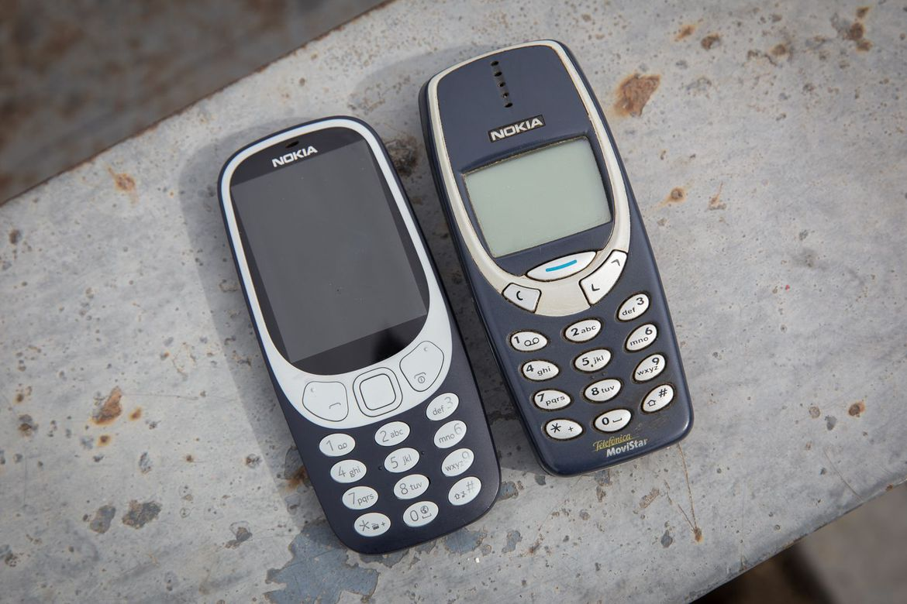

Nokia 3310: Would I buy it?
Published: 1st March 2017
Nokia have brought out a revamped model of the classic 3310 after 17 years but is it worth a purchase?
I really like the design of the Nokia 3310, with its retro look and new bright colours while keeping it very similar to classic 3310. The interface has also been updated with a full colour display and new simplistic icons.

Snake is also back, but unfortunately it’s not the original monochrome version which I personally am I little upset about. The version of Snake on the new 3310 reminds me a lot of Snake.io which I was never a fan of.
Another disappointing factor, for me, is that it only has 2.5G connectivity which means browsing the Internet isn’t going to be the best experience and you won’t be able to connect to WiFi. I think this is a big opportunity missed by Nokia as a lot of what every one does in their day to day lives is primarily online. As well as this, the traditional ways of communicating with people on phones (texting and calling) are being taken over by instant messaging apps.
Saying that this phone does have it positives. You have the ability to take photos, listen to music and you have the option to add expandable storage.
Personally, I would have liked to have seen the new 3310 revamped in a way in which everyone could use the phone every day. However, for the price (around £35) it is the perfect and stylish back up or festival phone.
Am I going to buy the Nokia 3310? Well if I’m honest I’m not sure as although I’m a big fan of the phone and love what Nokia have done to revamp the classic modal I don’t think it will be of any use to me without WiFi and not being able to play the classic monochrome Snake.
What are your thoughts on the new Nokia 3310? Are you going to buy it?
If you want to know more about the Nokia 3310 I recommend checking these out: